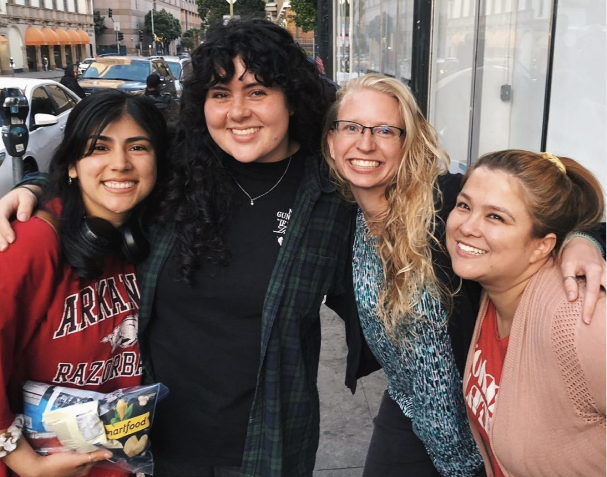
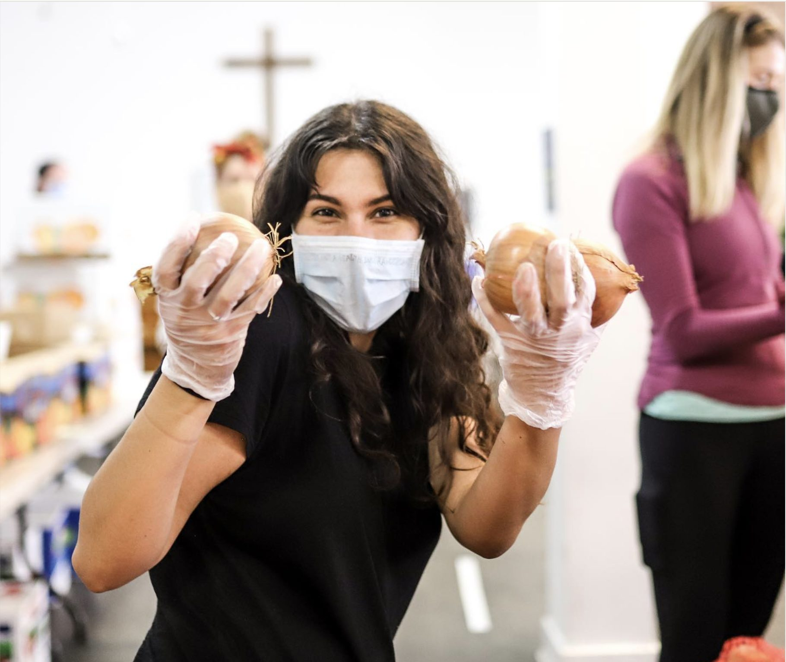
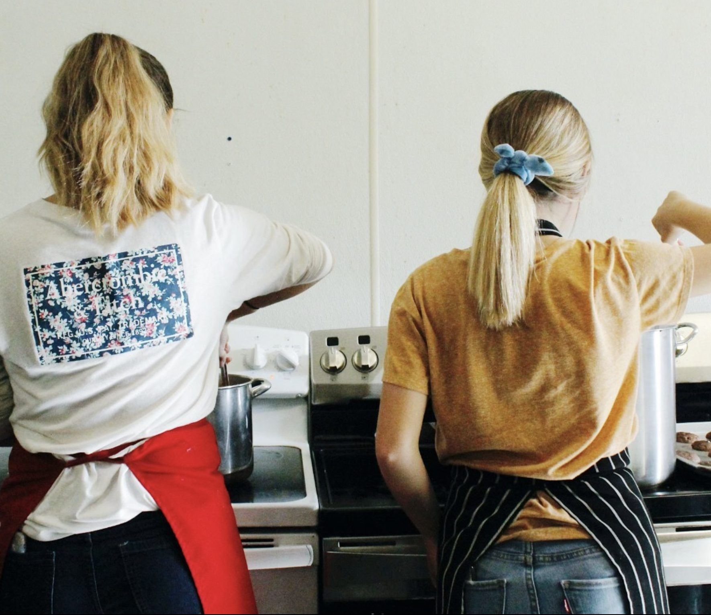

Come volunteer
Come for a shift. Stay for the people.
Every day we open our doors to serve our neighbors, our students and our outreach teams. It’s a big job, and we can’t do it alone.



Volunteer departures · 357 Ellis St
| When | Shift | Time | Status |
|---|---|---|---|
| THURSDAYS | FOOD PANTRY | 1–4 pm | Weekly |
| MON, TUE, WED & FRI | THE ELLIS ROOM | 10:30–4:30 | Weekly |
| FRIDAYS | HOT CHOCOLATE MINISTRY | 6:45–9 pm | Weekly |
| SUNDAYS | POP-UP CHURCH | 7:20–9 am | Weekly |
| 2ND & 4TH SUNDAYS | TENDERLOIN CONNECT | 2–5 pm | Weekly |
| ALL YEAR | MAINTENANCE | one day or more | Ongoing |
Tap a row to see the details and sign up.
Ways to serve · for Bay Area volunteers
Pick a shift. We’ll save you a seat.
Swipe or use the arrows. The card in the middle shows when it happens, with the details just below.
0tons of food served
0neighbors a week at the pantry
0days a week the Ellis Room is open
0our ministry center’s age
Live outside the Bay Area?
Serve for a summer, or a season.
Join our Summer of Service, or come as a Mission Builder: use your skills in maintenance, cooking, administration or photo and video, in exchange for free or subsidized room and board.
Design concept YWAM 5 for the YWAM San Francisco refresh — not the live site